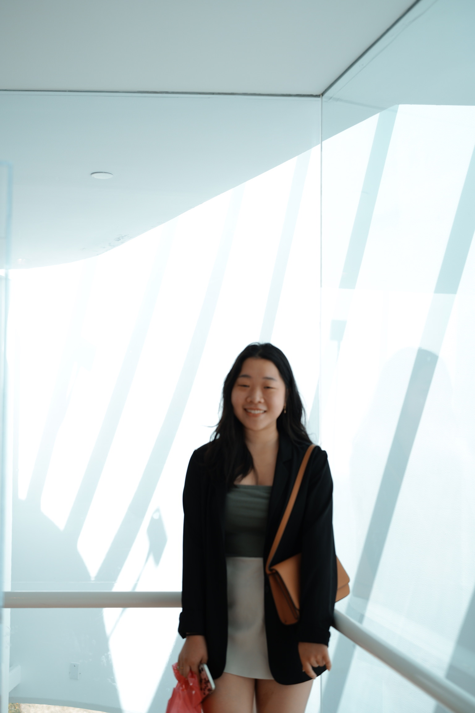

Daisy Kim is a senior studying towards a Bachelor's of Arts in Linguistics and Computer Science at Emory University. At Emory, she is a research assistant in the Language Acquisition Lab hosted by the linguistics department and lead by Dr. Yun Kim. In the fall, Daisy will attend the University of North Carolina at Chapel Hill to pursue a Master's in Linguistics.
Daisy currently works at the Asian Student Center at Emory University and at White Cap. The Asian Student Center is an identity space hosted by the Office for Racial and Cultural Engagement; she currently is an intern managing communications and student organization relations. In this position, she helps plan community programming and lends her voice as an advocate for students of color at Emory. Over the summer and currently in a part-time capacity, she also works as a human resources coordinator for White Cap, a construction supply company. In this role, she assists with various projects in digitization and supports different teams throughout the company including the compliance and learning teams.
Daisy is interested in pursuing careers and studies in multidisciplinary fields; she is passionate about social justice and the influence of language and technology in activism and advocacy.